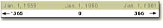
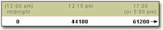
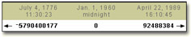
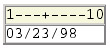
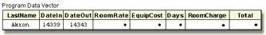
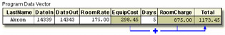
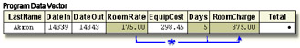

Overview
Introduction
SAS provides many informats for reading raw data values in various forms. In Chapter, Reading Raw Data in Fixed Fields, you learned how to use informats to read standard and nonstandard data. In this chapter, you learn how to use a special category of SAS informats called date and time informats. These informats enable you to read a variety of common date and time expressions. After you read date and time values, you can also perform calculations with them.
options yearcutoff=1920;
data perm.aprbills;
infile aprdata;
input LastName $8. @10 DateIn mmddyy8. +1 DateOut mmddyy8. +1 RoomRate 6. @35 EquipCost 6.;
Days=dateout-datein+1;
RoomCharge=days*roomrate;
Total=roomcharge+equipcost;
run;
Objectives
In this chapter, you learn how
- SAS stores date and time values
- to use SAS informats to read common date and time expressions
- to handle two-digit date values
- to calculate time intervals by subtracting two dates
- to multiply a time interval by a rate
- to display various date and time values
How SAS Stores Date Values
Before you read date or time values into a SAS data set or use those values in calculations, you should understand how SAS stores date and time values.
When you use a SAS informat to read a date, SAS converts it to a numeric date value. A SAS date value is the number of days from January 1, 1960, to the given date.
Here are some examples of how the appropriate SAS informat can convert different expressions for the date January 2, 2000, to a single SAS date value:
| Date Expression | SAS Date Informat | SAS Date Value |
|---|---|---|
| 02Jan00 | DATEw. | 14611 |
| 01-02-2000 | MMDDYYw. | 14611 |
| 02/01/00 | DDMMYYw. | 14611 |
| 2000/01/02 | YYMMDDw. | 14611 |
Storing dates and times as numeric values enables you to use dates and times in calculations in much the same way as you would use any other number.
How SAS Stores Time Values
SAS stores time values similar to the way it stores date values. A SAS time value is stored as the number of seconds since midnight.
A SAS datetime is a special value that combines both date and time information. A SAS datetime value is stored as the number of seconds between midnight on January 1, 1960, and a given date and time.
Reading Date and Time Informats
Overview
You use SAS date and time informats to read date and time expressions and convert them to SAS date and time values. Like other SAS informats, date and time informats are composed of
- an informat name
- a field width
- a period delimiter
SAS informat names indicate the form of date expression that can be read using that particular informat. Here are some examples of common date and time informats:
- DATEw.
- DATETIMEw.
- MMDDYYw.
- TIMEw.
As you know, there are several ways to write a particular date. For example, all the following expressions represent the date October 15, 1999. Each of these common date expressions can be read using the appropriate SAS date informat.
| Date Expression | SAS Date Informat |
|---|---|
| 10/15/99 | MMDDYYw. |
| 15Oct99 | DATEw. |
| 10-15-99 | MMDDYYw. |
| 99/10/15 | YYMMDDw. |
Specifying Informats
Using the INPUT statement with an informat after a variable name is the simplest way to read date and time values into a variable.
General form, INPUT statement with an informat:
INPUT <pointer-control> variable informat.;
where
- pointer-control gives the absolute or relative position of the pointer
- variable is the name of the variable that is being read
- informat. is any valid SAS informat. Note that the informat includes a final period
For example, the following INPUT statement uses two informats:
input @15 Style $3. @21 Price 5.2;
The $w. character informat ($3.) reads values, starting at column 15 of the raw data, into the variable Style. The w.d numeric informat (5.2) reads values, starting at column 21, into the variable Price.
Now let's look at some specific informats that you can use.
MMDDYYw. Informat
You can tell by its name that the informat MMDDYYw. reads date values in the form 10/15/99.
General form, values that are read with the MMDDYYw. informat:
mmddyy or mmddyyyy where
- mm is an integer between 01 and 12, representing the month
- dd is an integer between 01 and 31, representing the day
- yy or yyyy is an integer that represents the year
In the MMDDYYw. informat, the month, day, and year fields can be separated by blanks or delimiters such as hyphens (-) or slashes (/). If you use delimiters, you must place them between all fields in the values. Remember to specify a field width that includes not only the month, day, and year values, but any delimiters as well. Here are some date expressions that you can read using the MMDDYYw. informat:
| Date Expression | SAS Date Informat |
|---|---|
| 101599 | MMDDYY6. |
| 10/15/99 | MMDDYY8. |
| 10 15 99 | MMDDYY8. |
| 10-15-1999 | MMDDYY10. |
DATEw. Informat
The DATEw. informat reads date values in the form 30May2000.
General form, values that are read with the DATEw. informat:
ddmmmyy or ddmmmyyyy
where
- dd is an integer from 01 to 31, representing the day
- mmm is the first three letters of the month's name
- yy or yyyy is an integer that represents the year
You can place blanks or other special characters between the day, month, and year, as long as you increase the width of the informat to include these delimiters. Here are some date expressions that you can read using the DATEw. informat:
| Date Expression | SAS Date Informat |
|---|---|
| 30May00 | DATE7. |
| 30May2000 | DATE9. |
| 30-May-2000 | DATE11. |
TIMEw. Informat
The TIMEw. informat reads values in the form hh:mm:ss.ss.
General form, values that are read with the TIMEw. informat:
hh:mm:ss.ss
where
- hh is an integer from 00 to 23, representing the hour
- mm is an integer from 00 to 59, representing the minute
- ss.ss is an optional field that represents seconds and hundredths of seconds
If you do not enter a value for ss.ss, a value of zero is assumed. Here are some examples of time expressions that you can read using the TIMEw. informat:
| Time Expression | SAS Time Informat |
|---|---|
| 17:00:01.34 | TIME11. |
| 17:00 | TIME5. |
| 2:34 | TIME5. |
| Warning | Notice the last example. The field is only 4 columns
wide, but a w value of 5 is specified. Five is the
minimum acceptable field width for the TIMEw.
informat. If you specify a w value less than 5, you'll
receive the following error message in the SAS log:
SAS Log |
|---|
DATETIMEw. Informat
The DATETIMEw. informat reads expressions that are composed of two parts, a date value and a time value, in the form: ddmmmyy hh:mm:ss.ss.
General form, values that are read with the DATETIMEw. informat:
ddmmmyy hh:mm:ss.ss
where
- ddmmmyy is the date value, the same form as for the DATEw. informat
- the time value must be in the form hh:mm:ss.ss
- hh is an integer from 00 to 23, representing the hour
- mm is an integer from 00 to 59, representing the minute
- ss.ss is an optional field that represents seconds and hundredths of seconds
- the date value and time value are separated by a blank or other delimiter
If you do not enter a value for ss.ss, a value of zero is assumed.
Here are some examples of the DATETIMEw. informat. Note that in the time value, you must use delimiters to separate the values for hour, minutes, and seconds.
| Date and Time Expression | SAS Datetime Informat |
|---|---|
| 30May2000:10:03:17.2 | DATETIME20. |
| 30May00 10:03:17.2 | DATETIME18. |
| 30May2000/10:03 | DATETIME15. |
YEARCUTOFF= SAS System Option
Recall from Chapter, Referencing Files and Setting Options, that the value of the YEARCUTOFF= system option affects only two-digit year values. A date value that contains a four-digit year value will be interpreted correctly even if it does not fall within the 100-year span set by the YEARCUTOFF= system option
| Date Expression | SAS Date Informat | Interpreted As |
|---|---|---|
| 06Oct59 | date7. | 06Oct1959 |
| 17Mar1783 | date9. | 17Mar1783 |
However, if you specify an inappropriate field width, you will receive incorrect results. Notice that the date expression in the table below contains a four-digit year value. The informat specifies a w value that is too small to read the entire value, so the last two digits of the year are truncated.
| Date Expression | SAS Date Informat | Interpreted As |
|---|---|---|
| 17Mar1783 | date7. | 17Mar1917 |
Another problem arises if you use the wrong informat to read a date or time expression. The SAS log displays an invalid data message, and the variable's values are set to missing.
SAS Log
3 input birthday date8.;
4 run;
NOTE: Invalid data for BIRTHDAY in line 3 1-8.
RULE: ----+----1----+----3----+----4----+----5
3 03/23/98
BIRTHDAY=. _ERROR_=1 _N_=1
When you work with date and time values,
- check the default value of the YEARCUTOFF= system option, and change it if necessary. The default YEARCUTOFF= value is 1920. Recall that you can use the OPTIONS procedure to display the current setting of system options
- specify the proper informat for reading a date value
- specify the correct field width so that the entire date value is read
| Note | Later in this chapter, you'll learn how to work with data values that contain delimiters |
|---|
Using Dates and Times in Calculations
Introduction
In this chapter so far, you've learned how date and time informats read common date and time expressions in specific forms. Now you will see how converting date and time expressions to numeric SAS date values can be useful, particularly for determining time intervals or performing calculations.
Suppose you work in the billing department of a small community hospital. It's your job to create a SAS data set from the raw data file that is referenced by the fileref Aprdata. A portion of the raw data file below shows data values that represent each patient's
- last name
- date checked in
- date checked out
- daily room rate
- equipment cost
Example
| Warning | The following example is shown with the YEARCUTOFF= system option. When you work with two-digit year data, remember to check the default value of the YEARCUTOFF= option, and change it if necessary |
|---|
options yearcutoff=1920;
data perm.aprbills;
infile aprdata;
input LastName $8.
Notice that the values in the second and third fields are in the form mmddyy. To complete the INPUT statement, add instructions to read the values for RoomRate (third field) and EquipCost (fourth field), and add a semicolon.
options yearcutoff=1920;
data perm.aprbills;
infile aprdata;
input LastName $8. @10 DateIn mmddyy8. +1 DateOut
mmddyy8. +1 RoomRate 6. @35 EquipCost 6.;
Now that the INPUT statement is complete, calculate how many days each patient was hospitalized. Because DateIn and DateOut are numeric variables, you can simply subtract to find the difference. But because the dates should be inclusive (patients are charged for both the first and last days), you must add 1 to the difference. Call this new variable Days.
options yearcutoff=1920;
data perm.aprbills;
infile aprdata;
input LastName $8. @10 DateIn mmddyy8. +1 DateOut
mmddyy8. +1 RoomRate 6. @35 EquipCost 6.;
Days=dateout-datein+1;
You can calculate a total room charge by multiplying the variable values for Days and RoomRate.
options yearcutoff=1920;
data perm.aprbills;
infile aprdata;
input LastName $8. @10 DateIn mmddyy8. +1 DateOut
mmddyy8. +1 RoomRate 6. @35 EquipCost 6.;
Days=dateout-datein+1;
RoomCharge=days*roomrate;
Calculating the total cost for each patient is easy. Create a variable named Total whose value is the sum of RoomCharge and EquipCost. Then add a PROC PRINT step and a RUN statement to view the new data.
options yearcutoff=1920;
data perm.aprbills;
infile aprdata;
input LastName $8. @10 DateIn mmddyy8. +1 DateOut
mmddyy8. +1 RoomRate 6. @35 EquipCost 6.;
Days=dateout-datein+1;
RoomCharge=days*roomrate;
Total=roomcharge+equipcost;
run;
proc print data=perm.aprbills;
run;
| Obs | LastName | DateIn | DateOut | RoomRate | EquipCost | Days | RoomCharge | Total |
|---|---|---|---|---|---|---|---|---|
| 1 | Akron | 14339 | 14343 | 175 | 298.45 | 5 | 875 | 1173.45 |
| 2 | Brown | 14346 | 14365 | 125 | 326.78 | 20 | 2500 | 2826.78 |
| 3 | Carnes | 14361 | 14363 | 125 | 174.24 | 3 | 375 | 549.24 |
| 4 | Denison | 14345 | 14346 | 175 | 87.41 | 2 | 350 | 437.41 |
| 5 | Fields | 14349 | 14356 | 175 | 378.96 | 8 | 1400 | 1778.96 |
| 6 | Jamison | 14350 | 14357 | 125 | 346.28 | 8 | 1000 | 1346.28 |
If the values for DateIn and DateOut look odd to you, remember that these are SAS date values. Applying a format such as MMDDYY8. displays them as they appeared in Aprdata. You'll work with some other date and time formats later in this chapter.
Follow the execution of the program that you've written. When the DATA step executes, the values for DateIn and DateOut are converted to SAS date values.
options yearcutoff=1920;
data perm.aprbills;
infile aprdata;
input LastName $8. @10 DateIn mmddyy8. +1 DateOut
mmddyy8. +1 RoomRate 6. @35 EquipCost 6.;
Days=dateout-datein+1;
RoomCharge=days*roomrate;
Total=roomcharge+equipcost;
run;

After the rest of the INPUT statement executes, the value for Days is created by subtracting the SAS date value for DateIn from the value for DateOut and then adding 1.
options yearcutoff=1920;
data perm.aprbills;
infile aprdata;
input LastName $8. @10 DateIn mmddyy8. +1 DateOut
mmddyy8. +1 RoomRate 6. @35 EquipCost 6.;
Days=dateout-datein+1;
RoomCharge=days*roomrate;
Total=roomcharge+equipcost;
run;
The value for RoomCharge is calculated next. RoomCharge is the product of Days and RoomRate.
options yearcutoff=1920;
data perm.aprbills;
infile aprdata;
input LastName $8. @10 DateIn mmddyy8. +1 DateOut
mmddyy8. +1 RoomRate 6. @35 EquipCost 6.;
Days=dateout-datein+1;
RoomCharge=days*roomrate;
Total=roomcharge+equipcost;
run;

The value for Total is the final calculation. Total is the sum of EquipCost and RoomCharge.
options yearcutoff=1920;
data perm.aprbills;
infile aprdata;
input LastName $8. @10 DateIn mmddyy8. +1 DateOut
mmddyy8. +1 RoomRate 6. @35 EquipCost 6.;
Days=dateout-datein+1;
RoomCharge=days*roomrate;
Total=roomcharge+equipcost;
run;

Using Date and Time Formats
The WEEKDATEw. Format
You can use the WEEKDATEw. format to write these values out in a format that displays the day of the week, month, day, and year.
General form, WEEKDATEw. format:
WEEKDATEw.
The WEEKDATEw. format writes date values in the form day-of-week, month-name dd, yy (or yyyy).
where
- dd is an integer between 01 and 31, representing the day
- yy or yyyy is an integer that represents the year
| Note | If the w value is too small to write the complete day of the week and month, SAS abbreviates as needed |
|---|
proc print data=perm.aprbills;
format datein dateout weekdate17.;
run;
| Obs | LastName | DateIn | DateOut | RoomRate | EquipCost | Days | RoomCharge | Total |
|---|---|---|---|---|---|---|---|---|
| 1 | Akron | Mon, Apr 5, 1999 | Fri, Apr 9, 1999 | 175 | 298.45 | 5 | 875 | 1173.45 |
| 2 | Brown | Mon, Apr 12, 1999 | Sat, May 1, 1999 | 125 | 326.78 | 20 | 2500 | 2826.78 |
| 3 | Carnes | Tue, Apr 27, 1999 | Thu, Apr 29, 1999 | 125 | 174.24 | 3 | 375 | 549.24 |
| 4 | Denison | Sun, Apr 11, 1999 | Mon, Apr 12, 1999 | 175 | 87.41 | 2 | 350 | 437.41 |
| 5 | Fields | Thu, Apr 15, 1999 | Thu, Apr 22, 1999 | 175 | 378.96 | 8 | 1400 | 1778.96 |
| 6 | Jamison | Fri, Apr 16, 1999 | Fri, Apr 23, 1999 | 125 | 346.28 | 8 | 1000 | 1346.28 |
You can vary the results by changing the w value in the format.
| FORMAT Statement | Result |
|---|---|
| format datein weekdate3.; | Mon |
| format datein weekdate6.; | Monday |
| format datein weekdate17.; | Monday, Apr 5, 99 |
| format datein weekdate21.; | Monday, April 5, 1999 |
The WORDDATEw. Format
The WORDDATEw. format is similar to the WEEKDATEw. format, but it does not display the day of the week or the two-digit year values.
General form, WORDDATEw. format:
WORDDATEw.
The WORDDATEw. format writes date values in the form month-name dd, yyyy.
where
- dd is an integer between 01 and 31, representing the day
- yyyy is an integer that represents the yea
| Note | If the w value is too small to write the complete month, SAS abbreviates as needed |
|---|
proc print data=perm.aprbills;
format datein dateout worddate12.;
run;
| Obs | LastName | DateIn | DateOut | RoomRate | EquipCost | Days | RoomCharge | Total |
|---|---|---|---|---|---|---|---|---|
| 1 | Akron | Apr 5, 1999 | Apr 9, 1999 | 175 | 298.45 | 5 | 875 | 1173.45 |
| 2 | Brown | Apr 12, 1999 | May 1, 1999 | 125 | 326.78 | 20 | 2500 | 2826.78 |
| 3 | Carnes | Apr 27, 1999 | Apr 29, 1999 | 125 | 174.24 | 3 | 375 | 549.24 |
| 4 | Denison | Apr 11, 1999 | Apr 12, 1999 | 175 | 87.41 | 2 | 350 | 437.41 |
| 5 | Fields | Apr 15, 1999 | Apr 22, 1999 | 175 | 378.96 | 8 | 1400 | 1778.96 |
| 6 | Jamison | Apr 16, 1999 | Apr 23, 1999 | 125 | 346.28 | 8 | 1000 | 1346.28 |
You can vary the results by changing the w value in the format.
| FORMAT Statement | Result |
|---|---|
| format datein worddate3.; | Apr |
| format datein worddate5.; | April |
| format datein worddate14.; | April 15, 1999 |
Remember that you can permanently assign a format to variable values by including a FORMAT statement in the DATA step.
options yearcutoff=1920;
data work.aprbills;
infile aprdata;
input LastName $8. @10 DateIn mmddyy8. +1 DateOut
mmddyy8. +1 RoomRate 6. @35 EquipCost 6.;
Days=dateout-datein+1;
RoomCharge=days*roomrate;
Total=roomcharge+equipcost;
format datein dateout worddate12.;
run;
proc print data=work.aprbills;
run;
Summary
Text Summary
How SAS Stores Date and Time Values
SAS stores date values as numeric SAS date values, which are the number of days from January 1, 1960. SAS time values are the number of seconds since midnight.
Reading Dates and Times with Informats
Use SAS informats to read date and time expressions and convert them to SAS date and time values.
- MMDDYYw. reads dates such as 053090, 05/30/90, or 05 30 1990
- DATEw. reads dates such as 30May1990, 30May90, or 30-May-1990
- TIMEw. reads times such as 17:00, 17:00:01.34, or 2:34
- DATETIMEw. reads dates and times such as 30May1990:10:03:17.2, 30May90 10:03:17.2, or 30May1990/10:03
Two-digit year values require special consideration. When a two-digit year value is read, SAS defaults to a year within a 100-year span that is determined by the YEARCUTOFF= system option. The default value of YEARCUTOFF= is 1920. You can check or reset the value of this option in your SAS session to use a different 100-year span for date informats.
Using Dates and Times in Calculations
Date and time values can be used in calculations like other numeric values. In addition to tracking time intervals, SAS date and time values can be used with SAS functions and with complex calculations.
Using Date and Time Formats
SAS provides many specialized date and time formats that enable you to specify how date and time values are displayed and stored. You can use the WEEKDATEw. format to write date values in the form day-of-week, month-name dd, yy (or yyyy). You can use the WORDDATEw. format to write date values in the form month-name dd, yyyy.
Points to Remember
- SAS makes adjustments for leap years, but not for leap seconds or daylight saving time
- The minimum acceptable field width for the TIMEw. informat is 5. If you specify a w value less than 5, you'll receive an error message in the SAS log
- The default value of the YEARCUTOFF= option is 1920. When you work with two-digit year data, remember to check the default value of the YEARCUTOFF= option, and change it if necessary
- The value of the YEARCUTOFF= system option does not affect four-digit year values. Four-digit values are always read correctly
- Be sure to specify the proper informat for reading a date value, and specify the correct field width so that the entire value is read
- If SAS date values appear in your program output, use a date format to display them in legible form